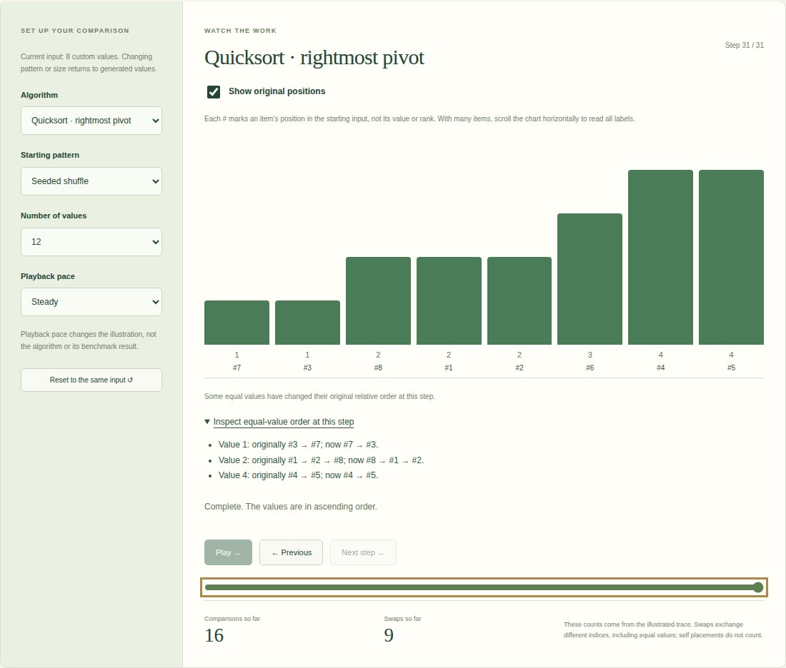
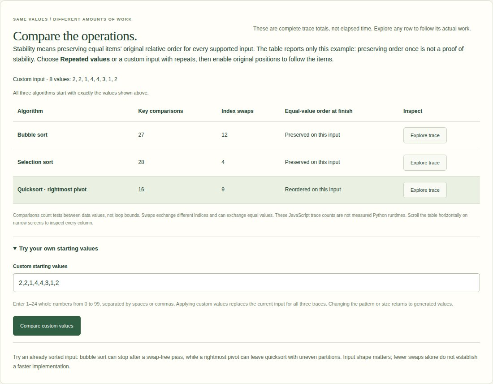
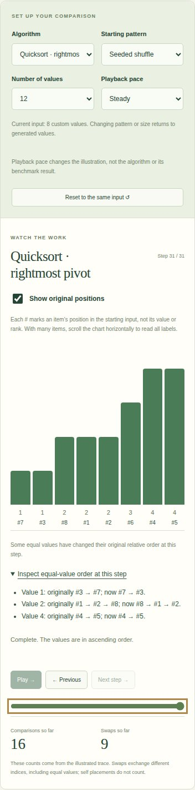

Sorting algorithms, measured.
Track original items through sorting exchanges and inspect equal-value order, while keeping operation counts separate from runtime.
Interactive browser explanation of three sorting approaches. Playback is illustrative; measured Python benchmarks are presented separately.

What I built
Extended the existing traces with immutable original item identities, optional position labels and observed equal-value order evidence on the same shared input.
Why it matters
Equal numbers look interchangeable in a sorting animation. Original positions reveal relative-order changes and help distinguish one observed result from a general stability guarantee.
How it works
- 01
Choose repeated values or a custom input, then enable original positions. Each # identifies a starting item, independent of its value or current rank.
- 02
Step through actual exchanges and inspect the original/current order of repeated values. Compare observed final order for the same input across three traces.
- 03
Keep operation totals separate from the preserved five-algorithm Python benchmark; original implementations and recorded measurements remain unchanged.
The technical challenge
Sorted numbers cannot reveal whether equal items changed places. Original identities must follow every real exchange without changing comparisons, swap counts or historical frames. The evidence names the scope: preserving order on this input is not proof of general stability. Known selection-sort and rightmost-pivot quicksort counterexamples reveal reversals without altering algorithm behavior.
What it demonstrates
Algorithmic reasoning, immutable trace state, controlled examples, regression testing and accessible interactive teaching.
Evidence, with context.
Five Python implementations passed correctness checks on 125 measured sorts: five identical seeded random samples at each size from 50 to 1,000. Median and IQR are calculated from saved raw measurements. Measurements were recorded on Windows-11-10.0.26300-SP0 with Python 3.12.2; unchanged algorithm hashes reuse those observations. The browser explorer compares complete key-comparison/index-swap totals for three actual traces on the same generated or validated custom input. Selecting a trace and resetting preserve its starting values. These operation counts and animation pace are separate from the recorded Python runtime measurements.
Verified source: c3f9946013e9 · Tests and visual capture ↗





Scope and limitations
Measurements cover random non-negative integer inputs from 50 to 1,000 in one recorded environment; they do not establish a universal ranking. IQR describes observed variation, not confidence. Rightmost-pivot recursive quicksort has adverse-input recursion limits. Radix supports non-negative integers and rejects booleans/fractions. The browser explorer ports only three approaches and limits inputs to 24 values; animation pace is unrelated to Python runtime.
Visual provenance and source attribution are recorded in the evidence register ↗.
Under the surface.
Architecture, methods and improvements
Every frame copies original identities alongside values. Real index-changing exchanges swap both; self placements change neither. A pure helper validates the permutation and compares repeated-value subsequences with their original order. Labels are one-based, while toggling retains the step and input. Dense labelled charts have readable minimum-width bars and keyboard scrolling. Seven Python tests preserve algorithms/cache provenance; eight Node tests reconcile every frame identity/value, independent snapshots and known reversals. Five browser journeys cover exact identities, evidence, keyboard toggling/scrolling and mobile fit alongside existing playback/custom-input checks.
Try it locally
Install requirements.txt; run python benchmark_portfolio.py, python plot_portfolio.py and python -m unittest discover -p "test_*.py" -v. Use --refresh to request new measurements. For browser verification, build Python fixtures and docs, npm ci, npm run test:trace and npm run test:browser.
The portfolio is a static GitHub Pages site. Server applications run locally; the portfolio does not collect bookings, credentials or payments.